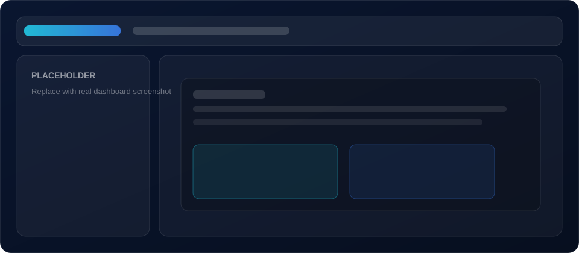
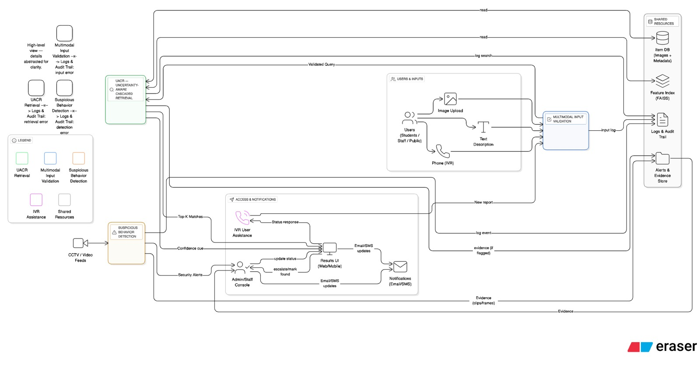

Adaptive Item Retrieval
Uncertainty-aware cascaded retrieval using MC Dropout, FAISS, and CLIP-based semantic re-ranking.
Research Project 2026
A unified AI-powered lost and found platform that improves item recovery through uncertainty-aware retrieval, proactive multimodal validation, real-time suspicious behavior detection, and predictive device risk analytics.
The proposed modular framework integrates adaptive retrieval, proactive validation, real-time monitoring, and predictive analytics to move beyond reactive item matching toward proactive loss prevention and intelligent security monitoring in real-world environments.
Uncertainty-aware cascaded retrieval using MC Dropout, FAISS, and CLIP-based semantic re-ranking.
Image, text, and voice quality validation with cross-modal consistency checking and explainable feedback.
Real-time suspicious behavior detection using YOLOv11, BoT-SORT tracking, and spatio-temporal rules.
Device behavior anomaly detection and XGBoost-based predictive analytics for proactive loss prevention.
0.8909
Precision@1
Achieved by the UACR + CLIP hybrid retrieval method.
90.4%
Validation Accuracy
Achieved by the proactive multimodal validation module on 500 submissions.
0.896
Item Precision
Achieved by YOLOv11 for object/item detection in suspicious behavior monitoring.
0.924
ROC-AUC
Achieved by XGBoost-based predictive lost item risk analytics.
Section 02
Lost and found management remains a major challenge in public environments such as campuses, transport hubs, and commercial buildings. Traditional systems depend mainly on manual reporting and keyword-based searching, which often fail when users provide incomplete descriptions, low-quality images, or inconsistent information.
This project introduces an AI-enabled lost and found framework that integrates four intelligent modules: Uncertainty-Aware Cascaded Retrieval, Proactive Multimodal Input Validation, Real-Time Suspicious Behavior Detection, and Predictive Device Risk Analytics. Together, these modules improve retrieval accuracy, validate submission quality, detect abnormal behavior, and support proactive prevention before items are permanently lost.
Replace the placeholder below with a UI screenshot or a system overview figure.

System Demo
Experience the AI-powered Lost and Found platform through a complete demonstration of the four main research components: item matching, multimodal validation, lost item risk prediction, and suspicious behavior detection.
Section 03
This section summarizes the research motivation, related work, objectives, and technical approach used to build an AI-powered Lost & Found system that supports retrieval, validation, prediction, and detection.
Research gap: Existing lost and found systems are mostly reactive, manual, and keyword-based. They lack intelligent quality control, uncertainty-aware retrieval, multimodal validation, real-time suspicious behavior monitoring, and predictive risk analytics. Current systems often treat item recovery as a simple matching problem, but they do not properly handle ambiguous visual inputs, incomplete descriptions, fraudulent claims, suspicious item-related behavior, or behavioral patterns that may indicate future loss events.
Research problem: How can an AI-enabled lost and found system improve item matching reliability, validate multimodal submissions, detect suspicious behavior, and predict potential item loss risks in real-world public environments?
The proposed solution addresses this problem through a unified modular architecture that combines adaptive retrieval, multimodal AI validation, video-based behavioral monitoring, and predictive analytics.
Traditional lost and found systems rely heavily on manual reporting and keyword-based searching. These systems perform poorly when user descriptions are incomplete, images are unclear, or submitted information is inconsistent.
Recent studies in computer vision and machine learning show that image-based retrieval, multimodal learning, and uncertainty estimation can improve matching reliability. However, fixed classification pipelines often fail under blur, occlusion, poor lighting, or visually similar items. Entropy-based uncertainty estimation and MC Dropout help identify low-confidence predictions and guide adaptive retrieval behavior.
Multimodal validation has become important because low-quality or fraudulent submissions can reduce system reliability. Image-text alignment using CLIP, text coherence analysis using Sentence-BERT, object detection using YOLO, and voice transcription using Whisper can help validate whether user inputs are complete and consistent.
In surveillance environments, suspicious activity is better detected through temporal behavior patterns rather than single-frame decisions. Object detection combined with multi-object tracking and spatio-temporal rules can detect unattended items, loitering, running, and owner-return events.
For proactive loss prevention, anomaly detection and predictive analytics can identify abnormal device behavior before a confirmed loss occurs. Isolation Forest can detect unusual behavior without labeled data, while XGBoost can predict the probability of item loss using behavioral and spatio-temporal features.
Main objective: To design and develop an AI-enabled lost and found system that improves item recovery, validates submission quality, detects suspicious behavior, and predicts potential item loss through adaptive retrieval, multimodal intelligence, temporal reasoning, and predictive analytics.
The system is organized as a pipeline from heterogeneous inputs to actionable outputs: multimodal and behavioral data is collected, fused through model-specific AI services, passed through a decision layer that unifies confidences and alerts, and finally surfaced as ranked matches, feedback, and notifications.
Inputs
User Inputs / CCTV Streams / Device Behavior Data
The CSS diagram above summarizes the end-to-end flow. For the final report, you can add high-resolution diagrams by placing PNG or JPEG
files in assets/images/ (same filenames below). If a file is missing, a placeholder is shown until you add the image.

Add assets/images/Overall-Architecture-Diagram.jpeg

Add assets/images/uacr-pipeline.png

Add assets/images/validation-pipeline.png

Add assets/images/suspicious-behavior-flow.png

Add assets/images/device-risk-analytics.png
For module-level implementation details, see Project Modules.
The system first classifies the input item image using a lightweight MobileNetV3-based classifier. MC Dropout is applied during inference to estimate uncertainty through entropy. Based on the uncertainty value, the system dynamically selects category-filtered search, expanded category search, or global search.
Item image embeddings are compared using FAISS for fast nearest-neighbor retrieval. When uncertainty is high, CLIP-based semantic re-ranking is applied to improve retrieval reliability in ambiguous cases.
The validation module checks image sharpness, object detection confidence, text completeness, semantic coherence, voice quality, and transcription confidence. It also verifies image-text alignment using CLIP and detects discrepancies across brand, color, category, and location.
Rejected or low-quality submissions are supported with explainable feedback using SHAP-based feature contribution analysis, allowing users to understand why their submission was flagged.
Live video frames are processed using YOLOv11 for object detection and BoT-SORT for multi-object tracking. Spatio-temporal rules detect unattended items, owner returns, loitering near unattended items, and running behavior.
Device behavior is represented using connectivity frequency, location transitions, session duration, hour-of-day, and day-of-week features. Isolation Forest detects abnormal behavior, while XGBoost predicts lost item risk using supervised learning and online model improvement.
Section 04
The proposed system integrates four AI-driven modules that work together to improve lost item recovery, ensure submission quality, monitor suspicious behavior, and predict loss risk.
This module improves image-based item matching by using classification uncertainty as a control signal. A MobileNetV3-based classifier predicts the item category, while MC Dropout is applied during inference to estimate uncertainty through entropy. Based on the uncertainty value, the system dynamically chooses between category-filtered FAISS search, expanded retrieval, and CLIP-based semantic re-ranking.
Results
This module validates lost and found submissions before they enter the system. It evaluates image sharpness, object detection confidence, text completeness, text coherence, voice clarity, transcription confidence, and cross-modal consistency. CLIP is used for image-text alignment, while SHAP supports explainable feedback generation.
Results
This module converts CCTV/video streams into real-time alerts. YOLOv11 detects people and items, while BoT-SORT maintains object identities over time. Rule-based spatio-temporal logic detects unattended items, owner-return events, loitering near unattended items, and running behavior.
Alert Types
ITEM_UNATTENDED
OWNER_RETURNED
LOITER_NEAR_UNATTENDED
RUNNING
Results
This module predicts potential item loss by analyzing device behavior patterns such as connectivity frequency, location transitions, session duration, hour-of-day, and day-of-week. Isolation Forest detects abnormal device behavior, and XGBoost predicts lost item risk.
Results
Section 05
Quantitative results from the evaluation experiments across retrieval, validation, video analytics, and device risk models.
The UACR + CLIP hybrid method achieved the best retrieval performance with Precision@1 of 0.8909 and Recall@5 of 0.9455. This outperformed the FAISS baseline and the UACR-only method by improving retrieval reliability in visually ambiguous cases.
| Method | P@1 | Recall@5 |
|---|---|---|
| FAISS Baseline | 0.7636 | 0.8727 |
| UACR Proposed | 0.7818 | 0.8545 |
| UACR + CLIP Hybrid | 0.8909 | 0.9455 |
The validation module achieved 90.4% overall accuracy and F1 score of 0.90 on 500 real-world lost and found submissions. It also detected 89.2% of deliberate image-text mismatches.
| Metric | Result |
|---|---|
| Overall Accuracy | 90.4% |
| Precision | 96.3% |
| Recall | 96.3% |
| F1 Score | 0.90 |
| Cross-Modal Detection | 89.2% |
| Spatial-Temporal Accuracy | 89.0% |
YOLOv11 improved item precision compared to YOLOv8, reducing false unattended-object alerts. Temporal reasoning and tracking helped improve behavior detection reliability.
| Model | mAP@0.5:0.95 | Precision | Recall | Item Precision |
|---|---|---|---|---|
| YOLOv8 | 0.306 | 0.879 | 0.814 | 0.858 |
| YOLOv11 | 0.329 | 0.874 | 0.776 | 0.896 |
Isolation Forest achieved the best anomaly detection performance with an AUC of 0.937. XGBoost achieved the best risk prediction performance with ROC-AUC of 0.924.
| Model | Accuracy | FPR | AUC |
|---|---|---|---|
| OCSVM | 82.4% | 11.2% | 0.871 |
| LOF | 84.7% | 8.6% | 0.896 |
| Isolation Forest | 89.1% | 5.3% | 0.937 |
| Model | Accuracy | Precision | Recall | F1 | ROC-AUC |
|---|---|---|---|---|---|
| Logistic Regression | 79.6% | 0.772 | 0.801 | 0.889 | 0.863 |
| Random Forest | 83.2% | 0.801 | 0.834 | 0.817 | 0.891 |
| XGBoost | 87.3% | 0.851 | 0.889 | 0.869 | 0.924 |
Section 06
A professional research journey timeline. Update the Date and Weight fields with your official schedule and marks.
Initial research proposal including problem statement, objectives, methodology, and project plan.
First progress evaluation covering initial implementation and component-level development.
Second progress evaluation covering system integration, model improvements, and testing.
Complete research documentation including methodology, implementation, results, and conclusion.
Final oral examination and project demonstration.
Section 07
Highlights of technical contributions and outcomes from the AI-enabled lost and found framework.
The system uses uncertainty-aware cascaded retrieval with MC Dropout, FAISS, and CLIP re-ranking to improve item matching reliability.
The platform validates image, text, and voice inputs before accepting submissions, reducing low-quality and inconsistent records.
YOLOv11, BoT-SORT tracking, and spatio-temporal reasoning enable real-time detection of unattended items and abnormal behavior.
Isolation Forest and XGBoost enable proactive lost item risk detection using behavioral and spatio-temporal device data.
Section 08
Access the project documents, reports, presentations, and research materials related to the development and evaluation of the AI-powered Lost and Found system.
Final research paper describing the AI-enabled lost and found system, adaptive retrieval, multimodal validation, suspicious behavior detection, and predictive risk analytics.
View PaperLink: assets/documents/research-paper.pdf
Initial project scope, team details, and research direction.
View DocumentLink: assets/documents/project-charter.pdf
Research problem, objectives, literature review, and proposed methodology.
View DocumentLink: assets/documents/proposal-document.pdf
Assessment checklist documents and progress evaluation materials.
View DocumentLink: assets/documents/checklist-documents.pdf
Complete final research report including implementation, testing, results, and conclusion.
View DocumentLink: assets/documents/final-report.pdf
Individual research activity logs and development progress records.
View DocumentLink: assets/documents/log-books.pdf
Section 09
View the presentation slides used during project evaluations and research progress assessments.
Initial presentation covering the research problem, objectives, and proposed solution.
View SlidesLink: assets/slides/proposal-presentation.pdf
First progress presentation covering early implementation and component development.
View SlidesLink: assets/slides/progress-presentation-1.pdf
Second progress presentation covering system integration, improvements, and testing.
View SlidesLink: assets/slides/progress-presentation-2.pdf
Final presentation covering the complete system, research outcomes, and evaluation.
View SlidesLink: assets/slides/final-presentation.pdf
Section 10
A collaborative research project developed by undergraduate researchers with academic guidance from supervisors and co-supervisors.
Designation: Add designation
Designation: Add designation
Student ID: Add ID
Role: Component 1 - Uncertainty-Aware Multimodal Item Retrieval
Email: Add email
Student ID: Add ID
Role: Component 2 - Multimodal Input Validation and Fraud Detection
Email: Add email
Student ID: Add ID
Role: Component 3 - Device Behavior Anomaly Detection and Lost Item Risk Prediction
Email: Add email
Student ID: Add ID
Role: Component 4 - Suspicious Behavior Detection Using Video Analytics
Email: Add email
Section 11
Have questions about our research or interested in collaboration? Reach out to our research team.